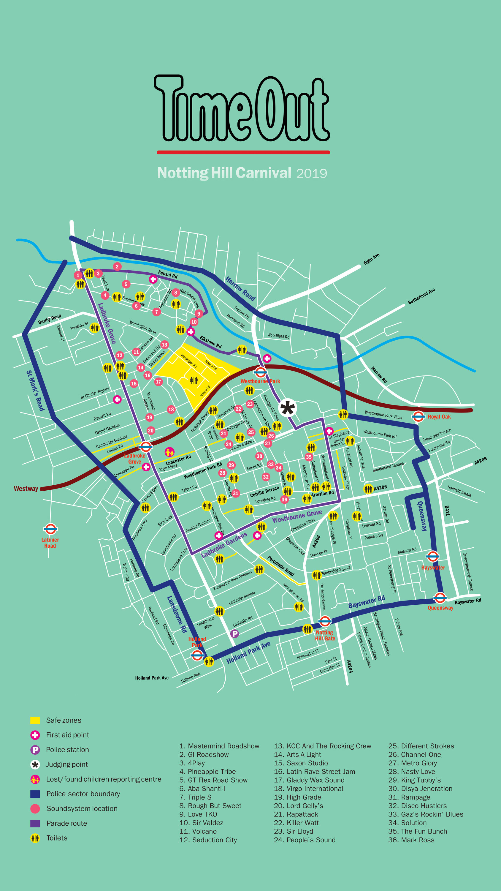

PARADES
Notting Hill Carnival is most known for the parade that travels through Kensington.
Our friends at TimeOut
have created a useful visual map of where the parade runs through. Starting at 9am on both days and ending at 6.30pm, you can find any of the stages on these streets!
